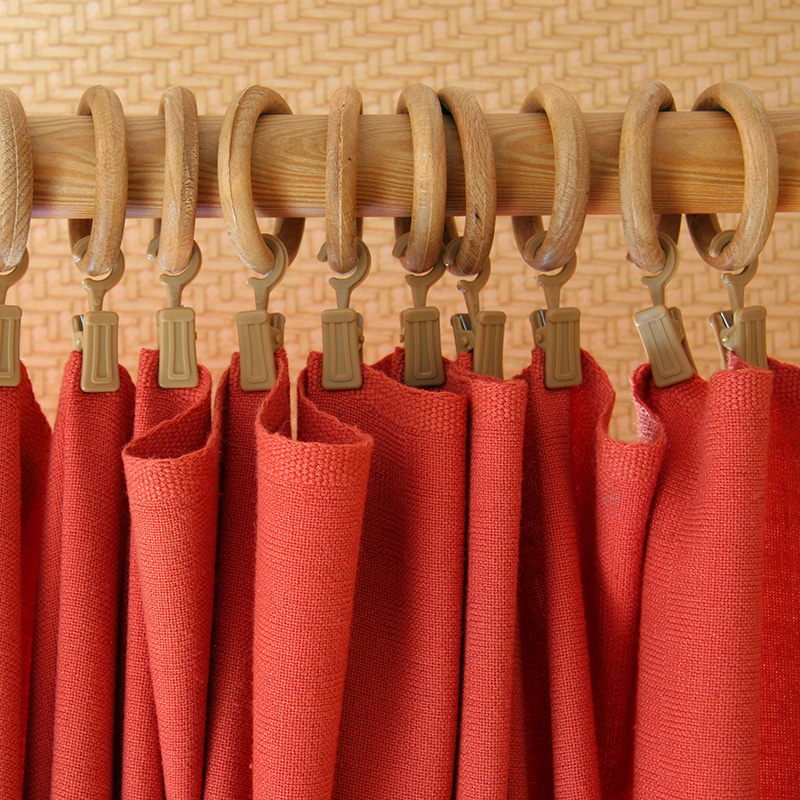

Decorative Rods
© iStock.com/wdragon
Decorative rods can range from simple wood poles and brackets to elaborate metals of all colours. The decorative rod is visible and an important element to the end result and impression of a window treatment. This kind of hardware shows the drape suspended below a visible rod and is used for many styles of drapery and valances.
Decorative rods add texture and colour and come in a variety of wood and metal finishes and in diameters from 1 – 3 inches. Longer lengths are held together by a splice and can be cut to the correct size upon installation. Solid rods are recommended over expandable ones to make sure the rod is the same diameter across the entire length for a more finished look. The wider the window the larger the diameter of the rod should be.
Large rooms, or those with a higher ceiling, should always use a large rod to match the proportions of the room. Since the rod is decorative and part of the window treatment design, it is important to have it large enough to show well in a room. Decorative rods are usually sold separately so that you can select the bracket (to hang the rod), ring (to attach the treatment) and finial (the decorative end piece on the rod) of choice. These threatments manually open by pulling the drape or using a small rod hanging down from the decorative rod.
Types of Decorative Rods
Click on each card to read more about each type of decorative rod:
Wooden Decorative Rods
Wooden Decorative Rods
The most popular diameter or a wood rod is 2" and would be used on windows larger than a 5 foot span. There are many colours of wood tone and even unfinished ones that can be painted in any colour. Styles available from plain to very ornate to suit every décor. Wooden rods often compliment the other woods used in the room.
Metal Decorative Rods
Metal Decorative Rods
Metal rods are the most popular hardware and come in colours from black wrought iron to white, bronze, silver and gold. Some even come with crystal finials to add some bling. There are new styles coming on the market all the time and can be a very exciting and fun addition to a drapery treatment.
Knobs
Knobs
Knobs are another kind of decorative treatment used for stationary treatments only. They are like a door knob that are attached to the wall in place of a rod and rings. They are not as common but can offer a dramatic effect on certain window styles.
Traverse Rod
Traverse Rod
A traverse rod is a decorative rod that has cords attached that operate the treatment to open and close. For several years they were not available, however now they are becoming popular again. They come in many colours and styles to suit today’s décor. They can be functional (hidden) or decorative and can be made to open one way or open both ways from the middle of the rod.
Video